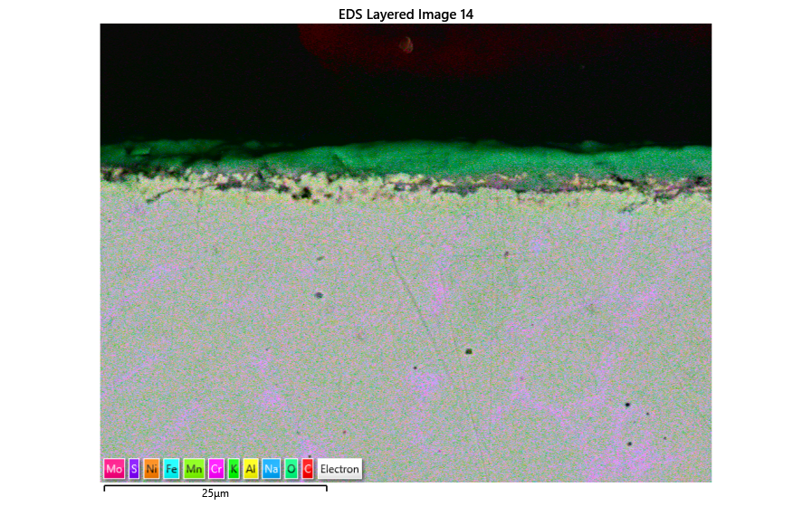

High-Temperature Molten Salt Corrosion of WAAM SS316L Stainless Steel
Investigated the high-temperature corrosion behavior of Wire Arc Additively Manufactured (WAAM) SS316L stainless steel in ternary chloride molten salt at 600°C for Concentrated Solar Power (CSP) thermal energy storage tanks. Conducted 250-hour and 500-hour furnace exposure experiments, metallographic preparation, 3D optical surface metrology, and SEM-EDS microscopy to compare corrosion mechanisms in open versus vapour-retentive covered crucibles.
- Problem & Scope: Evaluated whether additively manufactured SS316L can withstand corrosive nitrate-chloride molten salts at 600°C under different tank ventilation conditions.
- Key Outcome: Proved that covered-lid vapour retention accelerates porous oxide scale formation, chlorine/alkali ingress, and early pit initiation at 250 hours compared to compact Cr/Fe-rich oxide layers in open crucibles.
View Technical Parameters & Experimental Methodology
- Furnace Exposure: Ternary salt mixture (
10NaNO₃-78KNO₃-12KCl) at 600°C for 250 h and 500 h in a horizontal tube furnace under controlled nitrogen purge; authored full COSHH risk assessments. - Metallographic Preparation: Precision abrasive sectioning, cold-resin mounting, sequential SiC grinding, diamond polishing, and ultrasonic cleaning in acetone and isopropanol (IPA).
- Metrology & Characterization: 30-position stitched 3D optical dimensional profilometry (
.zviinterferometry & cumulative probability radius-change distributions), 10⁻⁵ g analytical balance gravimetry, and cross-sectional Backscattered Electron (BSE) SEM-EDS elemental mapping and Point-ID spectroscopy.
WAAM SS316L
600°C Molten Salts
SEM-EDS Microscopy
3D Optical Metrology (.zvi)
Metallography & COSHH
